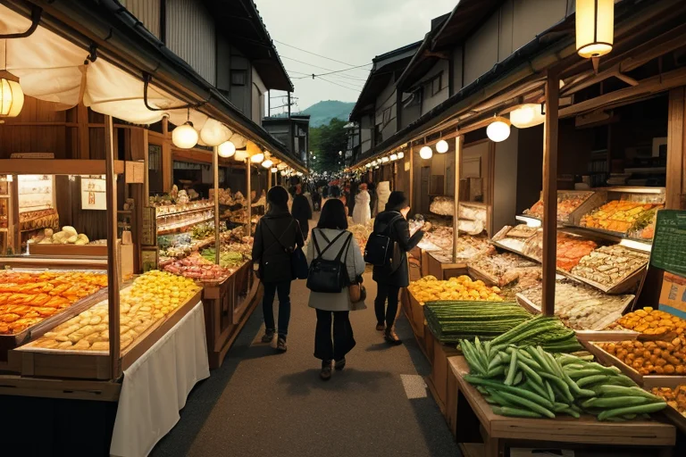
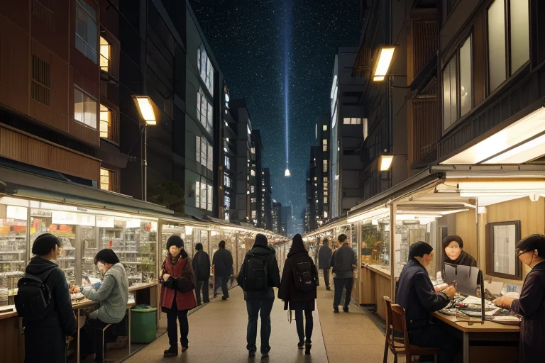
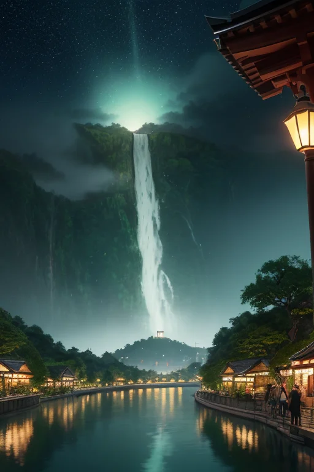
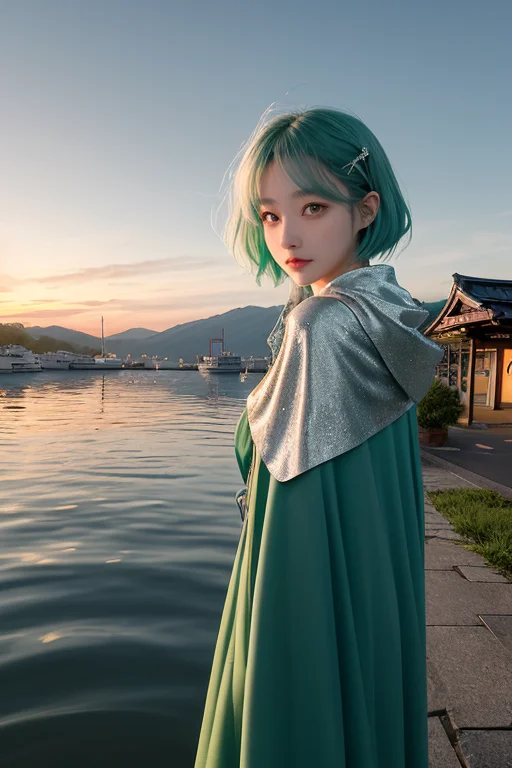

第一章 現実の茨城
あなたはまだ気づいていない。この土地にも、王がいることを。
水戸の市場は朝から活気に満ちていた。干し芋の甘い香りと納豆の独特な匂いが混ざり、店先には筑波山麓の新鮮な野菜や霞ヶ浦の魚が並ぶ。商人たちの掛け声、買い物客のざわめき、トラックのエンジン音。ここは、人と物と金が絶え間なく流れる、商いの心臓部だ。その喧騒のただ中、銀髪の青年が静かに立っていた。深緑のコートを纏ったその姿は、騒がしい市場の風景に、不思議と溶け込んでいる。
彼はイバラキア・フロンティア、この地を守る境界王だ。彼の目には、人々の欲望や期待、不安が色のついた流れとして見えている。取引が成立する瞬間の金色の閃き、交渉が決裂する時の灰色の淀み。彼はその流れを観察し、ほんのわずか、流れる方向を調整する。過熱する投機の波を少し冷まし、行き場を失いかけた商品の流れに、偶然の出会いのきっかけを仕込む。彼は何も創造せず、ただ存在する現実の「流れ」を、ほんの少しだけ滑らかにする調整者に過ぎない。
「王、次の『歪み』は筑波の研究機関方面です。人の『知』の流れが、少し乱れ気味ですよ」
肩に止まった小さな風の妖精、フロンティが囁く。イバラキアは微かに頷き、人混みへと歩みを進めた。
第二章 歪みの兆候
つくば研究学園都市のカフェは、各国の言語が飛び交う。イバラキアは窓際の席で、深緑のコートの襟を立てた。彼の目には、人々の間に漂う「知」の流れが見える。通常は活発に交差するそれらが、今日は幾筋か、不自然に淀んでいる。特定の研究棟から発せられる焦燥と猜疑の微粒子が、空気を濁らせていた。
「競争と秘密の境界線が、ねじれ始めている」
フロンティが低く唸る。隣の席では、若い研究者たちが小声で議論していた。国際共同プロジェクトのデータが、自国優先の名の下に囲い込まれようとしている。純粋な探求の流れが、国という境界に阻まれ、澱みとして蓄積し始めていた。
イバラキアは銀の指輪を軽く撫でた。彼にできるのは、この澱みが決定的な亀裂＝歪みに成長する前に、ほんの少し流れを変えることだけだ。一つの偶然の会話、一枚の誤って配られた資料。境界を越えるきっかけを、見えない矢印のように仕込む。越えた先に何があるかは、人間が決めることだ。

第三章 王の葛藤
つくば研究学園都市の一角で、ある研究室が深夜まで煌々と灯っていた。イバラキアは窓辺に立ち、その光を銀色の瞳で見つめていた。室内では、若き研究者たちが、ある画期的なナノ素材の最終データを取りまとめている。それは、国境を越えた国際共同研究の結晶だった。
「王、彼らの熱意、高揚感……これは『欲望』と呼ぶべきでしょうか」
フロンティがそっと囁いた。
「知りたい、成し遂げたいという欲求。それは人間の原動力だ」イバラキアは答えた。彼の目には、研究者たちの顔に浮かぶ、純粋な興奮と、ほんの少しの焦りと野心が映っている。「しかし、その熱が『独占』へと傾くとき、流れは淀む。共同の川は細り、やがて歪みを生む」
彼は感じていた。この成功が、次の瞬間には「我々のものだ」という排他的な喜びに変わり、共有の精神が失われる危険を。彼は指を鳴らした。ほんのわずかに、空気の流れを変える。エアコンの吹き出し口から、一人の研究者の机の上にあった国際共同研究者からの年賀状が、ひらりと舞い落ちた。
研究者はそれを拾い、ふと、海を越えた同僚の笑顔を思い出す。ほんの一瞬の躊躇が生まれた。独占したいという欲望と、共に歩みたいという初心の間で。
イバラキアは深緑の外套の襟を立てた。境界を越えるのは容易ではない。越えた先には、より複雑な人間の感情が待っている。守護とは、時に、彼らが欲望とどう向き合うかを見守る、忍耐の業でもあった。

第四章 妖精との対話
霞ヶ浦の岸辺、研究学園都市から流れてくるデータの光が水面に揺れる。トネリアが大河の流れのように深い声で語り始めた。「商いとは流れです。モノ、金、情報。その流れを滞らせるのも、歪ませるのも、人の『欲』という名の淀みです」
フロンティが風のように研究者の机を旋回した。「でもね、境界王！ この町の面白いところは、欲が『独占』だけじゃないってこと。筑波の研究者たちを見てごらん。彼らの欲望は、『分かち合いたい』『共に進みたい』っていう方向にも流れてる。納豆の糸みたいに、ね」
イバラキアは窓の外、夜道を走るトラックのランプを見つめた。筑波山の向こうから、大洗の港へ。流通は人の欲望を可視化する。「分かち合う欲望が、独占する欲望を上回る調整は可能か」
トネリアが答えた。「可能です。ただし、流れを変えるには時間がかかります。袋田の滝だって、一滴の水からあの流れになったのですから」
フロンティが研究者の肩にふわりと止まった。「ほら、彼はもう、メールを書き始めてる。『共同で』って言葉をね。境界を越える一歩は、こんな小さな決断から始まるんです」

第五章 微調整と余韻
霞ヶ浦の湖面が、夕日に染まる。水運の拠点だったこの湖は、今、研究データという新たな流れを静かに運んでいる。イバラキアは湖畔に立ち、目を閉じた。指先で、無数の「流れ」の軌跡をなぞる。研究者たちの共同研究の意志、筑波から発信される論文の行き先、大洗の港で積み替えられる貨物のわずかなタイミング。彼はそれらを、ほんの少しだけ調整する。
納豆をかき混ぜるように、偶然を撹拌する。干し芋を干すように、人の善意をじっくりと熟成させる。彼の仕事は、誰にも気づかれない。地震の歪みを一段階緩和し、津波の到達を数秒遅らせるのと同じように、人の心の動きや物資の流れに、目に見えない「ゆとり」と「つながり」を織り込んでいく。
フロンティが彼の耳元でささやく。「境界を越えたのは、彼ら自身です。私たちがしたのは、ほんの少し背中を押しただけ」
イバラキアは微かに頷いた。境界を越えたとき、何が変わるのか。答えは、まだ完全には見えない。だが、変わり始めた「流れ」の先に、分かち合う未来の輪郭が、かすかに浮かび上がっている気がした。彼は深緑と銀のマントを翻し、次の微調整へと歩み出した。
あなたの町にも、王がいる。